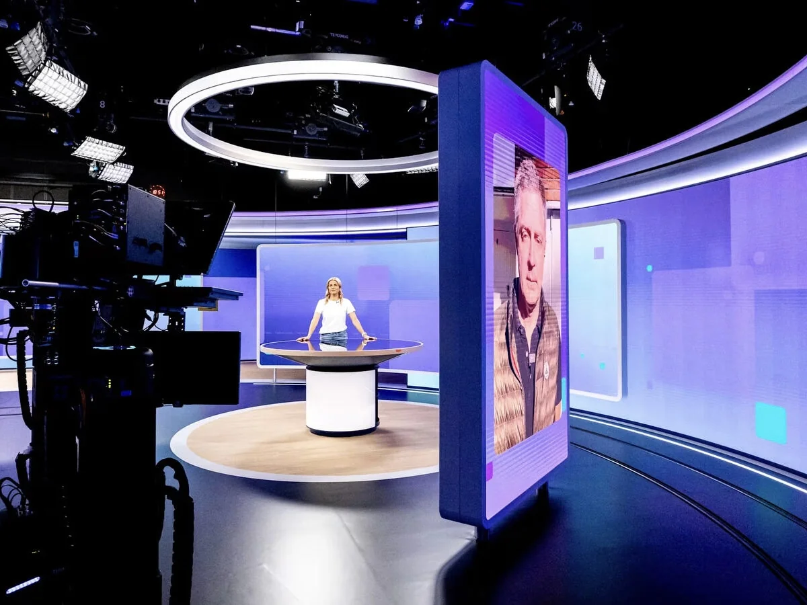
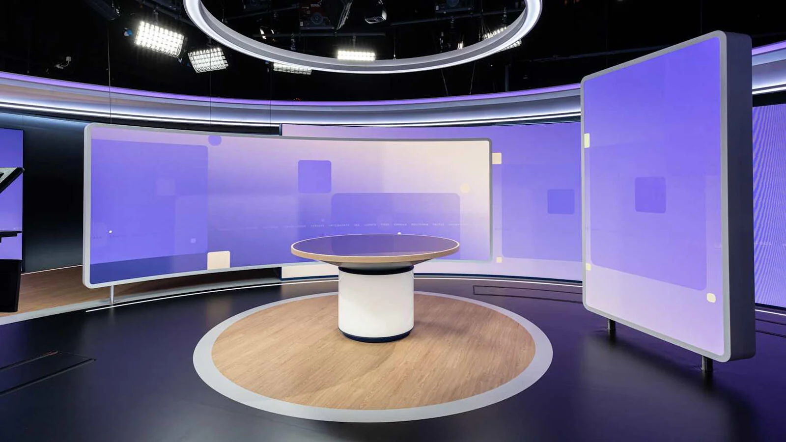

What are acoustic and fan-noise limits for a boardroom or studio LED wall? They are the audible limits a buyer writes into the specification so the wall, and any fans that cool it, stay quiet enough for speech, microphones and a reserved room. The buying decision is not only pixel pitch and brightness. It is whether the wall will be heard at the table, on a lavalier, or in a pause between sentences — and whether the bidder has to prove that with a figure, a method and a distance, rather than with a marketing claim that the product is “silent”.
This guide is for integrators, AV consultants and facilities teams specifying a fixed indoor wall in a meeting room, boardroom, broadcast studio or similar quiet space. It covers only acoustic and fan-noise requirements. Cooling paths, void depth and ventilation design belong in the cooling and ventilation guide; this article links to that work rather than repeating it. Room size, seating and image size belong in the conference room size guide and the all-in-one meeting guide. For a camera-facing studio wall as a system, use the broadcast studio buying guide.
A boardroom and a studio are not a lobby or a concourse. Background noise is low, people sit close to the wall, and speech or programme audio is the reason the room exists. A tone, a rattle or a bank of small fans that would disappear in a retail atrium can sit in the same frequency range as a voice and become part of the recording. In a studio, the wall is often behind or beside the talent and inside the microphone pickup; in a boardroom, the nearest chairs can be only a metre or two from the cabinet face or the service void.
Noise can come from more than one place: cabinet or power-supply fans, a rear intake or exhaust, a resonance in a thin back box, or air moving through a tight void. The specification should treat the installed wall as the source, not a module on a bench, because the void, the grille and the room all change what is heard. How you move that air is a cooling problem; how loud the result is, and how you will measure it, is the subject of this page.
None of the Asia Vision indoor pages used for these rooms publish a sound-pressure level, a fan count, a noise curve or an acoustic test method. That is the starting point for the RFQ: the figure has to be requested and confirmed on the quotation for the proposed cabinet and the proposed operating condition. Do not infer a noise level from brightness, refresh, cabinet material or the absence of a backshell.
What those pages do publish, and what is relevant to room choice rather than to acoustics, is the following. M-PRO is an indoor small-pitch series for conference rooms, control centres, classrooms and exhibition halls, with P1.25 / P1.56 / P1.87 (common cathode), SMD or GOB selectable, a 150 × 337.5 mm module, a die-cast aluminium 16:9 cabinet, no backshell, refresh ≥3840 Hz, brightness 800 cd/m² and contrast ≥8000:1. R-PRO is an indoor fixed series on a 640 × 480 mm die-cast aluminium cabinet (module 320 × 160 mm, no backshell), SMD or GOB selectable, at P1.25 / P1.53 / P1.86 / P2 / P2.5. Its product page does not publish brightness or refresh in the short specification table; do not invent those values, and do not treat the “excellent heat dissipation” wording as a noise figure.
COB CV-PRO is a fine-pitch COB series for high-end conference rooms, command centres and similar close-viewing rooms, with P0.9375 / P1.25 / P1.5625 / P1.875 (common anode), real and virtual pixel, a 150 × 337.5 mm module, no backshell (ultra-thin and light), refresh ≥3840 Hz, brightness 800 cd/m² and DC 4.2 V. The page discusses 24/7 rooms and states that CV-PRO is aimed at rooms where continuous operation is expected but a redundant signal path is not mandatory. RH-PRO COB is the flagship fine-pitch series for luxury corporate headquarters, premium broadcast studios and government command centres: P0.78 / P0.93 / P1.25 / P1.56, flip-chip COB, module 300 × 168.75 mm, refresh ≥7680 Hz, brightness 800–1200 cd/m², contrast ≥25000:1, viewing angle 178° H/V, DCI-P3 ≥99%, and dual power, dual receiver and dual signal. It mentions an anti-glare, anti-moiré, anti-blue-light surface for extended viewing in boardrooms and studios. None of those rows is an acoustic rating.
Figure 1 shows a broadcast studio with a presenter, a camera and LED surfaces around the desk. In a room like this, fan or cabinet noise is inside the microphone field, not only a comfort issue for people in the seats.

A useful noise clause is specific about the condition, the position and the method. At minimum, ask the bidder to state:
Do not copy a single “silent LED” or “fanless” claim from a brochure into a bid without the figure, the distance and the method. Two products can both be described as quiet and still differ by enough to appear on a microphone. If a bidder offers a typical or catalogue value, ask whether it applies to the exact series, pitch and power configuration you are buying, and have it confirmed on the quotation. Asia Vision will not invent a dB figure that the product page does not publish.
The same cabinet can be acceptable in one room and not in another, because the limit belongs to the room. A boardroom cares about speech at the table and about whether the wall is noticed in a quiet moment. A television or radio studio cares about the noise floor of the microphone plot and about tones that survive in the programme. A command or control room that runs 24/7 may tolerate a constant low level that a boardroom would not, or it may be stricter if operators sit close for a full shift. Write the limit for the room you are buying, not as a generic “indoor LED” number.
Say where the measurement will be taken: the nearest board seat, the presenter’s microphone position, or a grid of points along the face. If the wall is recessed, framed or fitted with a rear void, say that the acceptance test is on the installed wall, because a laboratory cabinet figure can change once the wall is boxed in. Staging and rental builds that are only in a quiet studio for a short hire should still carry a noise clause if microphones are in use; the touring environment around the stage is a different acoustic problem and should not be used as a substitute limit.
Figure 2 shows a quiet studio set with curved LED walls around a central desk. The wall is close to where people sit and speak; the noise clause should be written to that distance, not to a corridor or a lobby.

A workable acoustic RFQ states the room type, the nearest occupied position, and the evidence required, without inventing a number the project has not actually set:
Attach the room plan, the nearest chair or microphone distance, any house acoustic criterion the project already uses, and whether the wall shares a void with other plant. If your consultant has already set a room noise limit, put that limit in the annex and ask the bidder to design to it rather than to propose their own. Product pages publish a 3-year warranty and 18-day standard delivery; an acoustic test report, a special cooling arrangement or a mock-up can take longer, and that time should sit in the programme.
For a 16:9 meeting or boardroom wall, start with M-PRO. For a non-16:9 opening in a church, retail interior or renovated room, start with R-PRO. For close-viewing conference or command rooms, start with COB CV-PRO; where the room is a premium studio or a 24/7 position that needs full power and signal redundancy, start with RH-PRO COB. Send the room type, the nearest seating or microphone distance, any house noise limit you already have, and the wall size. We will confirm the cabinet series and, on the quotation, any acoustic data that can be offered for that configuration. We will not invent a dB or fan figure that is not published on the product page. Start the enquiry through the contact form.
Specifying a boardroom or studio wall where noise matters? Send the room type, the nearest seat or microphone distance, and any house limit you already have, and we will reply with the cabinet data and any acoustic figures that can be confirmed for that configuration. Start a project enquiry.